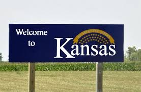

Kansas

About Kansas City
- Kansas City or K.C. is a city of 464,310 people, making it the largest municipality in the U.S. state of Missouri
- t is the central city of the Kansas City metropolitan area, a region spanning the Kansas–Missouri border
- Founded in the 1830s as a port on the Missouri River and originally called Kansas,
- this became confusing upon the establishment of Kansas Territory in 1854, creating the name Kansas City to distinguish the two
Homepage